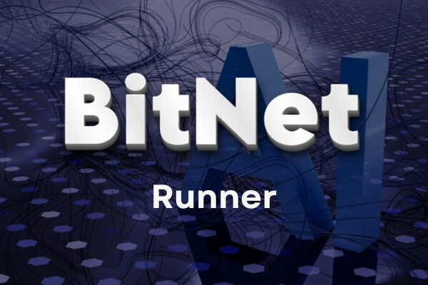

Projects
BitNet Runner
2025 · open source
A lightweight desktop app that wraps bitnet.cpp so you can run Microsoft's experimental BitNet models and
chat with them fully offline. Install it, drop a .gguf model into the models folder, pick it from the
dropdown and start talking.

ExoPlanetHunt AI
NASA Space Apps 2025
Built for the "A World Away" challenge. A web app that classifies Kepler observations as a confirmed
exoplanet, a candidate or a false positive, with single predictions, bulk CSV upload and a model insights
tab. The repo reports an AUC of 0.93.
LLM Token Counter
open source · MIT
A small Gradio tool for planning context limits instead of guessing. Upload a file or paste text and get
characters, words and tokens for OpenAI, LLaMA 2, Mistral and Gemma tokenizers, with a clearly labelled
estimate for Claude, which has no public tokenizer.
Word Hunt
EF-101 course project · in progress
A browser Hangman game with difficulty levels, persistent players, win streaks and a leaderboard. The
secret word stays on the server during a round, and scores live in PostgreSQL.
Space Shooter Score Service
small side project
A companion service that saves and displays scores for a browser space-shooter game.
More experiments, including InfoParse, Prompt2API and tab-saver-ai, are on
GitHub.